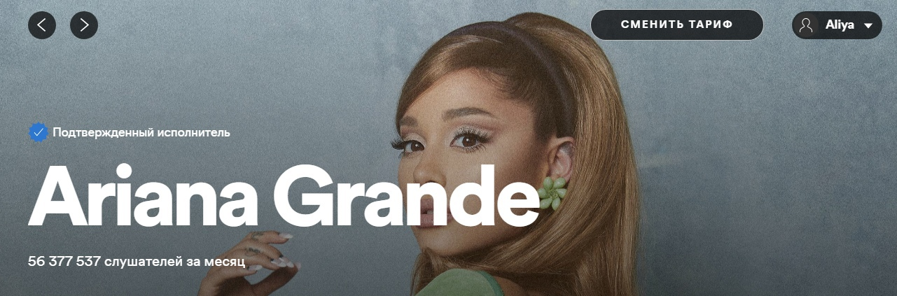
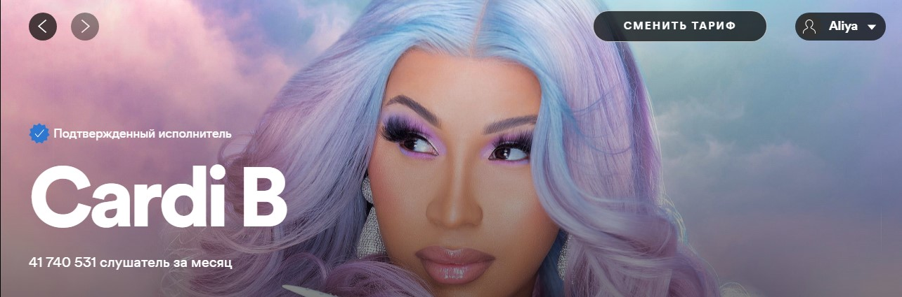
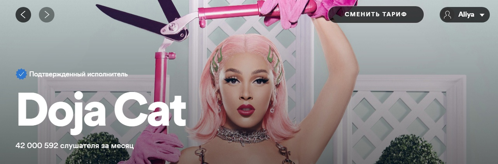

Профессиональную карьеру в шоу-бизнесе Ариана Гранде начала в 2008 году в бродвейском мюзикле «13». В 2009 году она получила роль Кэт Валентайн в телевизионном сериале «Виктория-победительница» на канале Nickelodeon, потом продолжила играть её же в телесериале «Сэм и Кэт», выходившем в 2013—2014 годах. Ариана также принимала участие в записи саундтреков и озвучивании мультфильмов (в частности, мультсериала «Клуб Винкс»). В 2015 году она вернулась на телеэкраны с эпизодической ролью Сони Херфман в сериале «Королевы крика». Музыкальная карьера Арианы началась в 2011 году с записи саундтрека к сериалу «Виктория-победительница». В том же году она заключила контракт со звукозаписывающей компанией Republic Records. В 2013 году у неё вышел дебютный альбом Yours Truly, дебютировавший на первом месте в американском чарте Billboard 200. Песня «The Way» с этого альбома занимала уверенные позиции в первой десятке чарта Billboard Hot 100 и была положительно встречена музыкальными критиками. Следующий альбом Арианы Гранде, My Everything (2014), также дебютировал на первой позиции в американском чарте. Альбом имел мировой успех благодаря хитам «Problem», «Break Free», «Bang Bang» и «Love Me Harder». C несколькими песнями с него певица 34 недели непрерывно находилась в первой десятке американского чарта Billboard Hot 100. В 2015 году она отправилась в мировой тур в поддержку этого альбома, озаглавленный The Honeymoon Tour.

Ее дебютный альбом, вторжение в личную жизнь (2018), дебютировал под номером один на Billboard 200 , сломал несколько потоковых записей, был сертифицирован трижды платиновым в RIAA и назван Billboard верхней женской рэп - альбом из 2010s. [4] Получивший признание критиков, он получил премию Грэмми за лучший рэп-альбом , что сделало Карди Би единственной женщиной, получившей эту награду как сольный исполнитель, а также первой женщиной-рэп-исполнителем за 15 лет, которая была номинирована на « Альбом года». . Он породил два сингла номер один в Billboard Hot 100 ; " Бодак желтый"", что сделало ее единственной женщиной-рэпером, получившей сертификат Diamond от RIAA, и второй женщиной-рэпером, которая возглавила чарт с сольным выступлением после Лорин Хилл в 1998 году, и" I Like It ", которая сделала ее первая женщина-рэпер, получившая несколько песен номер один в чарте. Ее совместная работа с Maroon 5 " Girls Like You " сделала ее единственной женщиной-рэпером, которая трижды возглавила Hot 100. " WAP ", главный сингл ее второго альбома, сделал она единственная женщина рэп - исполнитель достичь Billboard Hot 100 вершины чартов синглов в течение двух десятилетий (2010s и 2020 - е годы). " Up", следующий сингл, сделал ее единственной женщиной-рэпером, достигшей нескольких номеров Hot 100 с сольными песнями, и расширил ее рекорд как женский рэпер с самым большим количеством синглов номер один в Hot 100 в качестве своего пятого лидера. Признанная Forbes одной из самых влиятельных женщин-рэпперов всех времен, Cardi B известна своим агрессивным течением и откровенными текстами, которые получили широкое освещение в СМИ.

Ее песня " So High " привлекла внимание Kemosabe и RCA Records, где она подписала совместный контракт на запись в возрасте 17 лет, впоследствии выпустив свой дебютный EP Purrr! в 2014. Doja Cat выпустила свой дебютный студийный альбом Amala (2018), а затем завоевал вирусный успех в качестве интернет-мема с синглом « Mooo! », Который появился в роскошной версии ее дебютного альбома вместе с синглами « Juicy » и « Tia Tamera». "в 2019 году. Второй студийный альбом Doja Cat, Hot Pink (2019), вошел в топ-10 американского Billboard 200 и породил синглы" Say So " и " Streets ", первый из которых возглавил чарт Billboard Hot 100 после выпуск двух ремиксов с участием Ники Минаж, что привело к сотрудничеству с Арианой Гранде , Озуной и The Weeknd. Doja Cat известен созданием музыкальных клипов и песен, которые становятся популярными в приложениях социальных сетей, таких как TikTok и YouTube . Doja Cat был номинирован на три премии «Грэмми» и получил две награды American Music Awards в дополнение к награде MTV Video Music Award за лучший новый артист «Push» и ее европейскому аналогу .